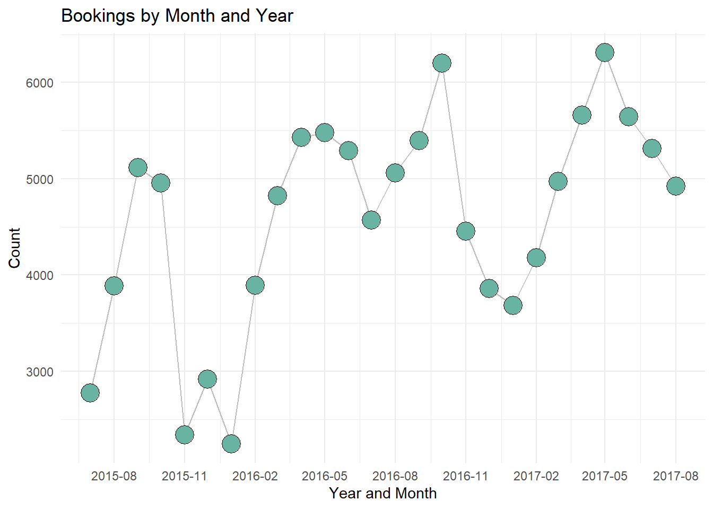
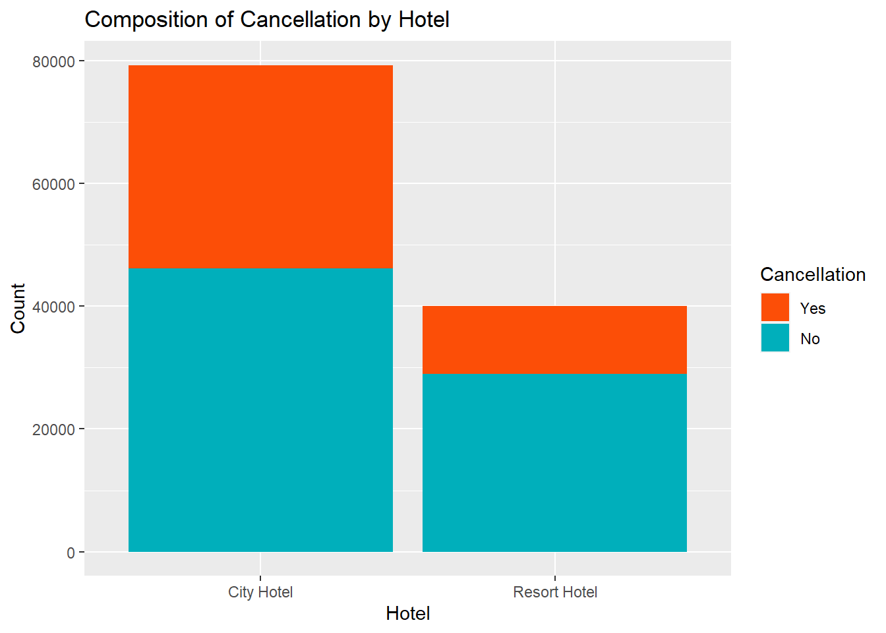

library(tidyverse)
library(ggplot2)
library(lubridate)
knitr::opts_chunk$set(echo = TRUE, warning=FALSE, message=FALSE)Challenge 6
challenge_6
Shaunak Padhye
hotel_bookings
Visualizing Time and Relationships
Read in data
For this challenge, I will be using the following dataset:
- hotel_bookings ⭐⭐⭐⭐
bookings <- read.csv("_data/hotel_bookings.csv")
head(bookings) hotel is_canceled lead_time arrival_date_year arrival_date_month
1 Resort Hotel 0 342 2015 July
2 Resort Hotel 0 737 2015 July
3 Resort Hotel 0 7 2015 July
4 Resort Hotel 0 13 2015 July
5 Resort Hotel 0 14 2015 July
6 Resort Hotel 0 14 2015 July
arrival_date_week_number arrival_date_day_of_month stays_in_weekend_nights
1 27 1 0
2 27 1 0
3 27 1 0
4 27 1 0
5 27 1 0
6 27 1 0
stays_in_week_nights adults children babies meal country market_segment
1 0 2 0 0 BB PRT Direct
2 0 2 0 0 BB PRT Direct
3 1 1 0 0 BB GBR Direct
4 1 1 0 0 BB GBR Corporate
5 2 2 0 0 BB GBR Online TA
6 2 2 0 0 BB GBR Online TA
distribution_channel is_repeated_guest previous_cancellations
1 Direct 0 0
2 Direct 0 0
3 Direct 0 0
4 Corporate 0 0
5 TA/TO 0 0
6 TA/TO 0 0
previous_bookings_not_canceled reserved_room_type assigned_room_type
1 0 C C
2 0 C C
3 0 A C
4 0 A A
5 0 A A
6 0 A A
booking_changes deposit_type agent company days_in_waiting_list customer_type
1 3 No Deposit NULL NULL 0 Transient
2 4 No Deposit NULL NULL 0 Transient
3 0 No Deposit NULL NULL 0 Transient
4 0 No Deposit 304 NULL 0 Transient
5 0 No Deposit 240 NULL 0 Transient
6 0 No Deposit 240 NULL 0 Transient
adr required_car_parking_spaces total_of_special_requests reservation_status
1 0 0 0 Check-Out
2 0 0 0 Check-Out
3 75 0 0 Check-Out
4 75 0 0 Check-Out
5 98 0 1 Check-Out
6 98 0 1 Check-Out
reservation_status_date
1 2015-07-01
2 2015-07-01
3 2015-07-02
4 2015-07-02
5 2015-07-03
6 2015-07-03Briefly describe the data
This dataset contains the booking details for a number of hotels. This is a very comprehensive dataset having 32 variables. It covers various details such as the details of the booking party (adults, children, babies, meal, country, etc), details of the hotel(hotel, reserved room type, assigned room type, etc) and details of the booking itself(arrival date details, reservation status details, etc). The data will need to be tidied and some columns will be mutated.
Tidy Data (as needed)
We can merge the arrival columns to create a single column that holds the arrival date in a standard format.
bookings$date_str <- paste(bookings$arrival_date_year, bookings$arrival_date_month, bookings$arrival_date_day_of_month, sep = "-")
bookings$arrival_date <- as.Date(bookings$date_str, format = "%Y-%B-%d")
bookings <- bookings[, !(names(bookings) %in% "date_str")]
head(select(bookings, arrival_date, reservation_status_date)) arrival_date reservation_status_date
1 2015-07-01 2015-07-01
2 2015-07-01 2015-07-01
3 2015-07-01 2015-07-02
4 2015-07-01 2015-07-02
5 2015-07-01 2015-07-03
6 2015-07-01 2015-07-03bookings <- select(bookings, -arrival_date_week_number, -arrival_date_day_of_month)
colnames(bookings) [1] "hotel" "is_canceled"
[3] "lead_time" "arrival_date_year"
[5] "arrival_date_month" "stays_in_weekend_nights"
[7] "stays_in_week_nights" "adults"
[9] "children" "babies"
[11] "meal" "country"
[13] "market_segment" "distribution_channel"
[15] "is_repeated_guest" "previous_cancellations"
[17] "previous_bookings_not_canceled" "reserved_room_type"
[19] "assigned_room_type" "booking_changes"
[21] "deposit_type" "agent"
[23] "company" "days_in_waiting_list"
[25] "customer_type" "adr"
[27] "required_car_parking_spaces" "total_of_special_requests"
[29] "reservation_status" "reservation_status_date"
[31] "arrival_date" We can use the lead_time column along with the arrival_date column to get the booking date for the booking.
bookings$reservation_booking_date <- bookings$arrival_date - days(bookings$lead_time)
head(select(bookings, lead_time, arrival_date, reservation_booking_date)) lead_time arrival_date reservation_booking_date
1 342 2015-07-01 2014-07-24
2 737 2015-07-01 2013-06-24
3 7 2015-07-01 2015-06-24
4 13 2015-07-01 2015-06-18
5 14 2015-07-01 2015-06-17
6 14 2015-07-01 2015-06-17Time Dependent Visualization
We can plot the number of bookings for a month over time. This can give us a good idea regarding which months are popular.
bookings %>%
mutate(year_month = format(as.Date(arrival_date), "%Y-%m")) %>%
group_by(year_month) %>%
summarise(Total_bookings = n()) %>%
ggplot(aes(x = as.Date(paste0(year_month, "-01")), y = Total_bookings)) +
geom_line(color = "grey") +
geom_point(shape = 21, color = "black", fill = "#69b3a2", size = 6) +
theme_minimal() +
labs(title = "Bookings by Month and Year",
x = "Year and Month",
y = "Count") +
scale_x_date(date_breaks = "3 month", date_labels = "%Y-%m")
From the above graph, we can see that there is a dip in the number of bookings for the winter months and the number of bookings are highest during the summer months.
Visualizing Part-Whole Relationships
We can check the cancellation percentage for each hotel by plotting a bar graph.
ggplot(bookings, aes(x = hotel, fill = factor(is_canceled))) +
geom_bar(position = position_stack(reverse = TRUE)) +
scale_fill_manual(values = c("#00AFBB", "#FC4E07"), name = "Is Canceled") +
labs(title = "Composition of Cancellation by Hotel", x = "Hotel", y = "Count",fill="Cancellation") +
scale_fill_manual(values = c("#00AFBB", "#FC4E07"),
guide = guide_legend(reverse = TRUE),
labels = c("No", "Yes"))
We observe that while “City Hotel” received more bookings overall, there was a less percentage of cancellations for the “Resort Hotel”